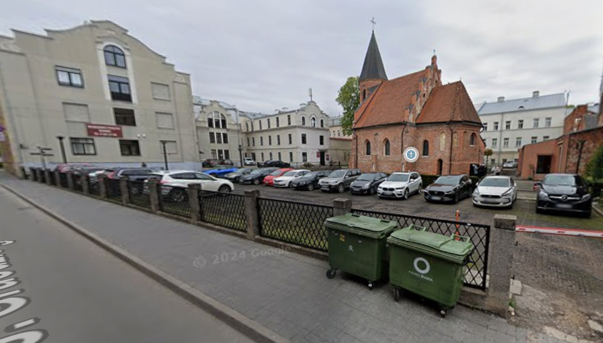
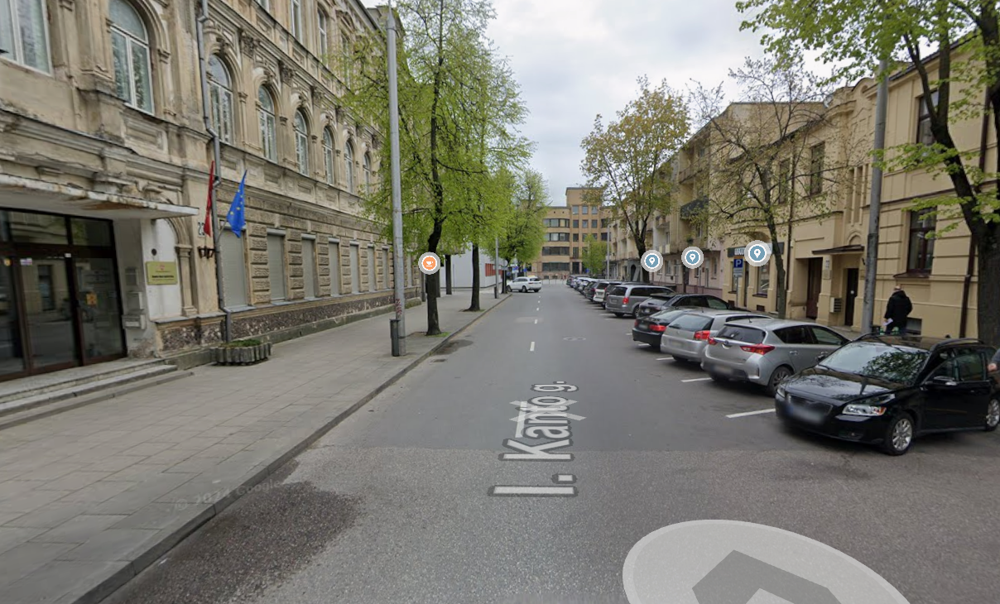

Santuokos ceremonija

Kauno Šv. Gertrūdos (Marijonų) bažnyčia
2026 m. rugpjūčio 8 d.
13:15 val.
Laisvės al. 101B
Kaunas
Būtume dėkingi, jei atvyktumėte šiek tiek anksčiau ♡
Automobilių parkavimas
Prie bažnyčios įrengta nemokama automobilių stovėjimo aikštelė.
Jei joje nebeliktų laisvų vietų, automobilius rekomenduojame statyti netoliese esančiose I. Kanto gatvės stovėjimo vietose.
Nuo jų iki bažnyčios – vos kelios minutės pėsčiomis.

Parkavimo vietos šalia bažnyčios

Rekomenduojama parkavimo vieta I. Kanto gatvėje